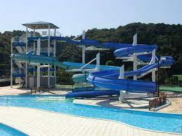

戻る
すいすいパークぷるる

概要 :室内プールは一年中利用でき、屋外プールは7月・8月のみ利用できます。屋外には流れるプールやウォータースライダーや露天風呂、サウナの完全完備！大人から子供、家族みんなで楽しむことができます。
住所
静岡県御前崎市宮内1581－1
営業時間 : 9月～6月 10時～21時
7月～8月 9時30分～21時
定休日 : 月曜日 年末年始
電話番号 : 0537-36-0195
ホームページ :
https://pururu.org/